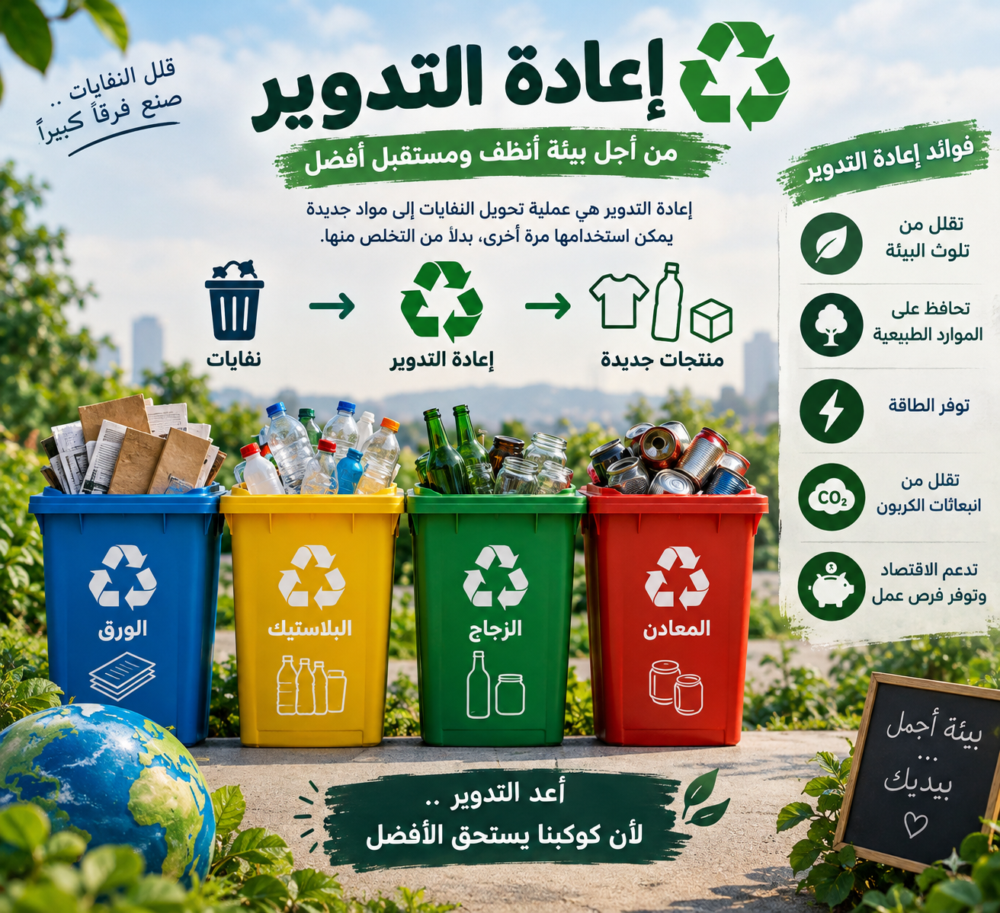
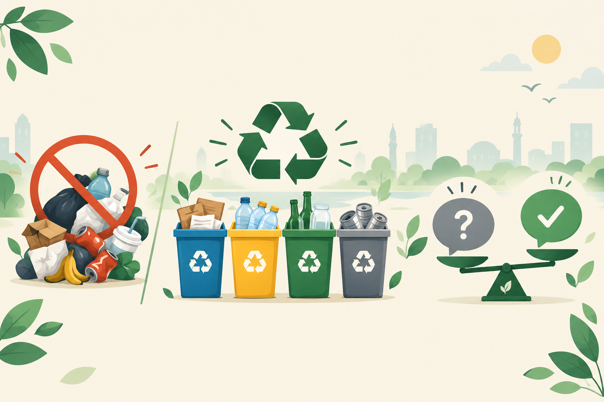

بيئياً
تقليل النفايات يقلل تلوث التربة والمياه الجوفية، ويخفض انبعاثات الميثان من المقالب، وهو غاز أقوى من ثاني أكسيد الكربون في احتباس الحرارة.
كل شيء نرميه يمكن أن يتحول إلى مورد إذا تعاملنا معه بالطريقة الصحيحة.
ابدأ من هناتنتج مصر كميات كبيرة من النفايات الصلبة يومياً، ومعظمها ينتهي في مقالب عشوائية أو يُحرق في الهواء الطلق، ما يسبب تلوثاً للتربة والهواء والمياه الجوفية.
المشكلة ليست في كمية النفايات فقط، بل في طريقة التعامل معها. الفصل من المصدر وإعادة التدوير يمكن أن يقللا الحجم المدفون بشكل كبير، ويوفّرا مواد خام وفرص عمل.
تقليل النفايات يقلل تلوث التربة والمياه الجوفية، ويخفض انبعاثات الميثان من المقالب، وهو غاز أقوى من ثاني أكسيد الكربون في احتباس الحرارة.
إعادة التدوير توفّر مواد خام وتخلق فرص عمل في جمع وفصل وتصنيع المخلفات، بدلاً من دفنها أو استيراد مواد جديدة.
النظافة العامة تقلل انتشار الأمراض والحشرات، وتحسّن جودة الحياة في الأحياء والمدارس، وترفع الوعي بقيمة الموارد.
أمثلة شائعة من المنزل والمدرسة، وكيفية التعامل مع كل نوع:
| النوع | أمثلة | التعامل الصحيح |
|---|---|---|
| نفايات عضوية | بقايا طعام، قشور خضار | تحويلها إلى سماد (كمبوست) |
| ورق وكرتون | صحف، دفاتر، علب | الفصل وإعادة التدوير |
| بلاستيك | زجاجات، أكياس، عبوات | الفصل والتنظيف ثم التدوير |
| زجاج ومعادن | برطمانات، علب مشروبات | الفصل وإعادة الصهر |
| نفايات خطرة | بطاريات، أدوية منتهية | تسليمها لجهات مختصة |
هي تحويل النفايات إلى مواد ومنتجات جديدة بدلاً من دفنها. توفّر الطاقة والمواد الخام، وتقلل الانبعاثات المرتبطة بإنتاج مواد جديدة.
هناك مبادرات وشركات محلية متخصصة في جمع المخلفات وإعادة تدويرها، مثل مبادرات جمع البلاستيك والورق في المدارس والمنازل، وبعض الجمعيات الأهلية في القاهرة والجيزة والإسكندرية.

النفايات لا تختفي عند رميها، بل تتحول إلى مشكلة بطرق مختلفة.
حرق النفايات في الهواء الطلق يُطلق غازات ضارة بالجهاز التنفسي، ويزيد من مشكلات الربو والحساسية في المناطق المجاورة.
السوائل المتسربة من المقالب تصل إلى المياه الجوفية والمجاري المائية، وتؤثر على جودة المياه المستخدمة في الزراعة والشرب.
تحلّل النفايات العضوية في المقالب يُنتج غاز الميثان، وهو أحد أقوى غازات الاحتباس الحراري وأكثرها تأثيراً على المناخ.
المعادن الثقيلة والبلاستيك في التربة يقللان من خصوبتها ويعطّلان نمو النباتات لسنوات طويلة.
خرافة: كل النفايات نفس الشيء، مش مهم نفصلها.
الحقيقة: الفصل من المصدر هو أساس أي عملية تدوير ناجحة، لأنه يقلل التلوث ويوفّر تكاليف الفرز لاحقاً.
خرافة: إعادة التدوير مسؤولية الدولة بس.
الحقيقة: التدوير يبدأ من المنزل والمدرسة، والدور الرسمي يكمّل هذا الجهد وليس بديلاً عنه.

خرافة: دفن النفايات أرخص من تدويرها.
الحقيقة: التكلفة الظاهرية أرخص، لكن التكلفة البيئية والصحية على المدى الطويل أعلى بكثير.
خرافة: جهد فرد واحد مش فارق.
الحقيقة: لو كل طالب في المدرسة فصل ورق فصله اليومي، الفرق في حجم النفايات سيكون ملحوظاً خلال شهر.
يقترح فريقنا في المدرسة تنفيذ مبادرة "فصلها صح" وتشمل:
[ملاحظة: هذا النص مبدئي وقابل للتعديل من قبل الفريق]